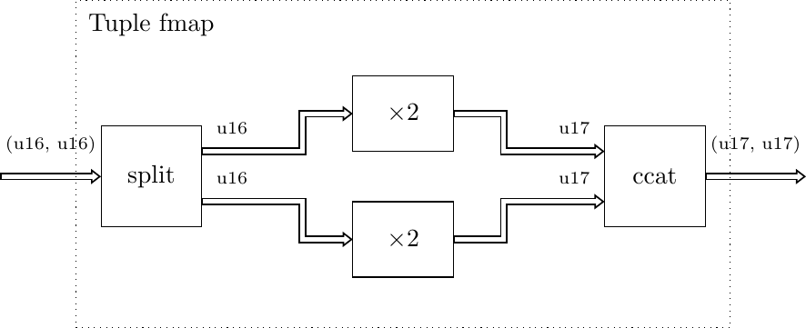

fmap¶
Enables a gear which operates on a certain data type to be used with a complex data type that contains the type the gear knows how to handle.
-
fmap(din: Tuple, *, f, lvl=1, fcat=ccat, balance=None)¶ The
Tuplefmap is useful in context where we need to operate onTuple-s of some data types, and we already have gears that implement desired transformation but they operate on data types that are individual fields of theTuple. The gears that process theTuplefields are passed as a tuple (or any Python iterable) through thefparameter, and there should be as many gears as there are fields in theTuple. If some of the fields should not be processed at all,Noneshould be passed in their place for thefparameter.Consider a simple example where a complex number is implemented as a
Tuple, and we would like to multiply both the real and imaginary parts with a number 2. We don’t need to create a special gear for multiplying a complex number with a scalar, as we can reuse themul()gear with a helm of thefmap():drv(t=Tuple[Uint[16], Uint[16]], seq=[(0, 0), (1, 10), (2, 20)]) \ | fmap(f=(mul(2), mul(2))) \ | check(ref=[(0, 0), (2, 20), (4, 40)])
Under the hood, the
fmapwill be implemented as shown below:
-
fmap(din: Union, *, f, fdemux=demux_ctrl, fmux=mux, balance=None) The
Unionfmap operates ont theUniondata types and enables to process theUniondata values with different gears depending on the concrete type of the value. The gears that process theUniontypes are passed as a tuple (or any Python iterable) through thefparameter, and there should be as many gears as there are types in theUnion. Unlike theTuplefmap, only one of the gears is used to process the received value, i.e. only one gear is active at a time.Following example processes the data that can either be signed or unsigned integers, and if value is signed it decrements it, otherwise nothing is done to the data:
drv(t=Union[Int[16], Uint[16]], seq=[(0, 1), (1, 1), (-10, 0), (-11, 0)]) \ | fmap(f=(sub(b=1), None)) \ | check(ref=[(0, 1), (1, 1), (-11, 0), (-12, 0)])
Under the hood, the
fmapwill be implemented as shown below:
-
fmap(din: Union, *, f, lvl=1, fcat=czip, balance=None, common_balance=True) The
Queuefmaps are useful in context where we need to operate onQueue()-s of some data types, and we already have gears that implement desired transformation but operate on single data or lower levelQueues.Consider a simple example in which we want to multiply each element of a
Queuewith a number 2. We don’t need to create a special gear for this, as we can reuse themul()gear with a helm of thefmap():drv(t=Queue[Uint[16]], seq=[[0, 1, 2, 3, 4]]) \ | fmap(f=mul(2)) \ | check(ref=[[0, 2, 4, 6, 8]])
Under the hood, the
fmapwill be implemented as shown below: